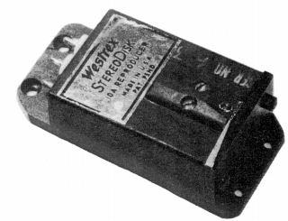
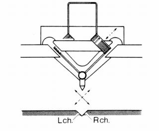
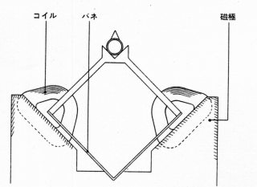
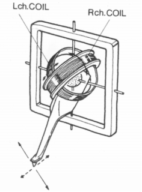
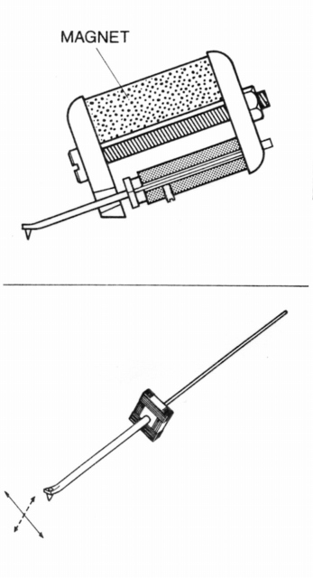
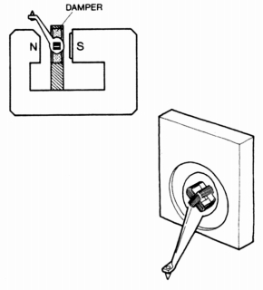
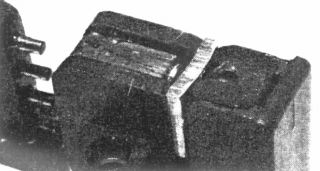
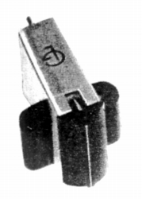
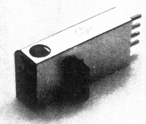
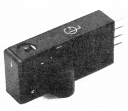

グラドのMC型について
グラドの現在の代理店であるナイコムのサイトには、「グラドはステレオＭＣ型フォノカートリッジの発明者（彼の特許はオルトフォン、デンオンをはじめほとんどのステレオＭＣ型に及ぶ基本的なもの・・ひとつのアーマチュアにＬ／Ｒ両チャンネルのコイルが巻かれている。）であり・・・」との記述がありました。
確かに、独自の発電形式を持ったMC型カートリッジを開発したとの意味では、「発明」と呼んでもおかしくありませんが、より大きな意味でのMC型カートリッジ、すなわち磁石を固定しコイルを動かして発電するカートリッジという意味では、オルトフォンをはじめとして多くの先行者がおり、グラドがすべてのMC型の元祖のように扱うのは、明らかに間違いです。
少なくとも現在のステレオ用MCカートリッジの元祖という意味では、45/45方式を開発したウェストレックスが根本にあります。そのウェストレックがステレオディスクのリプロデュサーとして開発したカートリッジがMC型であり、これを無視してMC型カートリッジ全体の発明者のごとくふるまうのは不遜としかいえません。

（ウェストレック/10A”ステレオディスク・リプロデューサー" ）

（ウェストレック/10Aの振動系構造。強いていえば「サテン」の原型ともとれる構造。 右はサテンM-15の振動系）
またナイコムのサイトにあった「ひとつのアーマチュアにＬ／Ｒ両チャンネルのコイルが巻かれている」点についても、フェアチャルドがXP-4というカートリッジで実現したのが最初であるとされています。

（フェアチャイルド/233の振動系。XP-4とほぼ同じ構造）そしてカンチレバー、コイル、ワイヤーサスペンションをコンパクトにまとめた構造を完成させたのが、一般的にMC型カートリッジの元祖とされるオルトフォンのSPUです。

（オルトフォンSPUの断面と振動系）どうも振動系の構造や、フラックスの切り方などで独創性があれば、「発明」としていたようです。そうした意味で独創的なMC型カートリッジをグラドが「発明」したとするのは、それ自体はおかしな話では無いのかもしれません。
それではグラドのMC型はどのような構造だったのでしょうか？


（グラドの振動系構造図。右は「エクスペリメンタル」のカバーをはずしたところ。本編ページのFCE+の画像と同根のものを感じる）
構造的には上述のフェアチャイルドの流れを引くものといって良いと思います。ジョセフ・グラド氏がフェアチャイルド社のチーフエンジニアだったという逸話とも一致します。フェアチャイルドの振動系をマイクロ化、精密化し、さらにコイルからカンチレバーを一体成型のプラスチックで固めたものらしいです。
しかしこの当時のグラドのMC型は、日本の湿度・温度などの環境下では非常に断線しやすかったそうです。



（グラドのMC型カートリッジ 左から タイプA、ラボラトリー、エクスペリメンタル）
グラドのインデックス